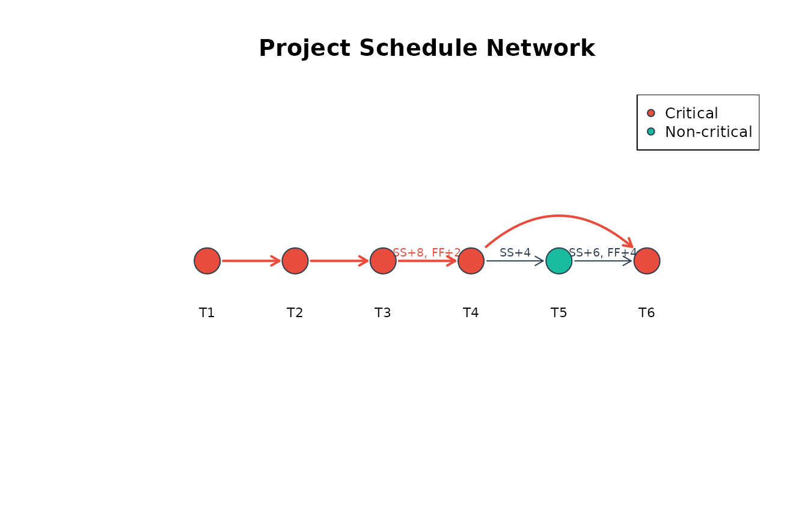
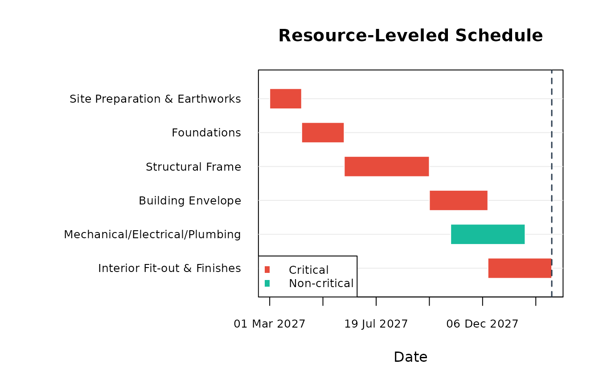
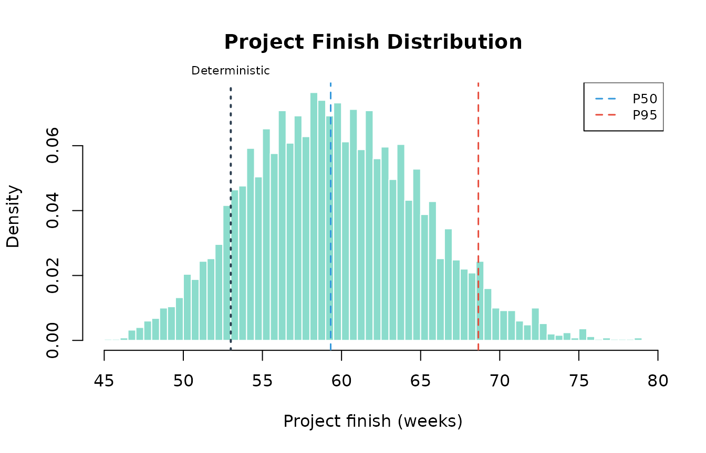
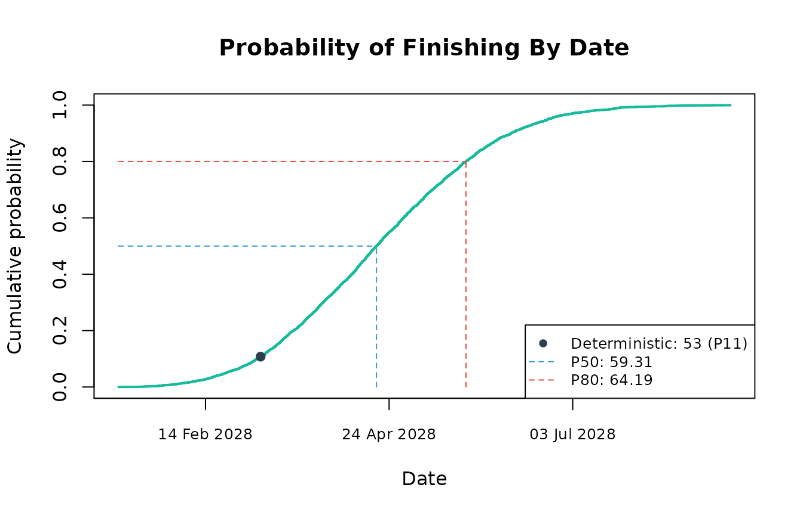
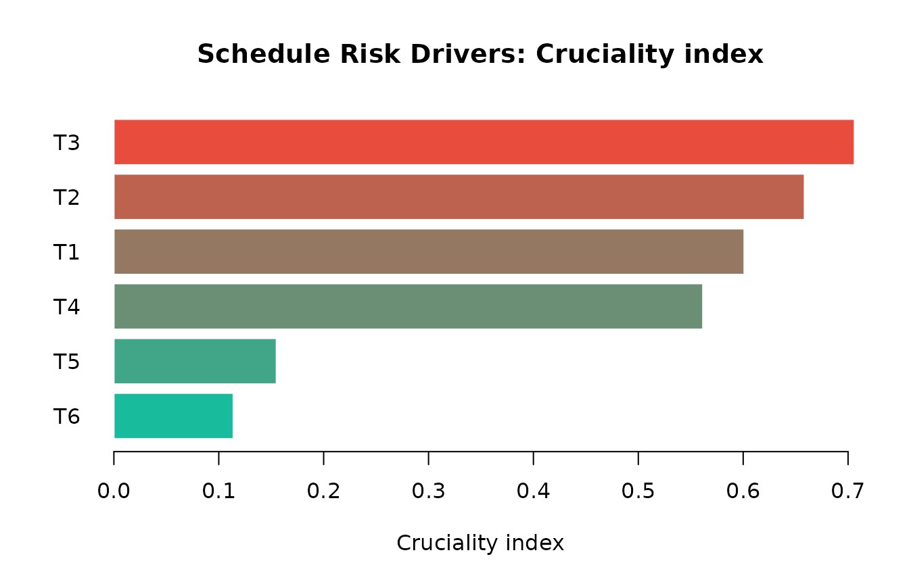
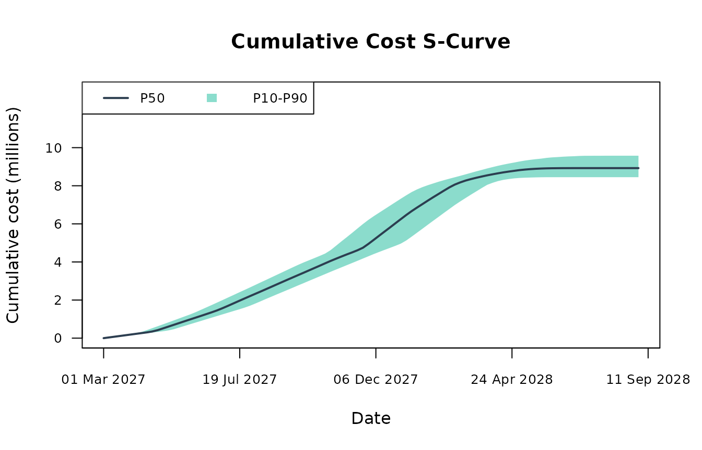
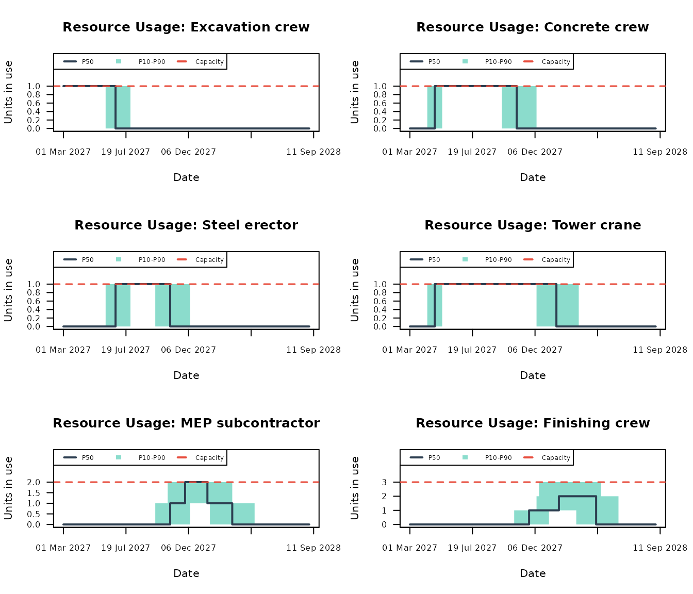

Case Study: Schedule Risk Analysis of a Resource-Loaded Project with Causal Networks
Source:vignettes/schedule-risk.Rmd
schedule-risk.Rmd
library(PRA)
# 10,000 iterations locally; fewer on CRAN so the vignette builds quickly.
n_sims <- if (nzchar(Sys.getenv("NOT_CRAN"))) 10000L else 1000L
n_lev <- if (nzchar(Sys.getenv("NOT_CRAN"))) 5000L else 500LThis case study analyzes the schedule of a mid-rise building. Its six work packages run on overlapping paths, share one tower crane and two finishing crews, and face two discrete risk events. Adding up task durations misses two effects. Where parallel paths merge, the finish is set by whichever path runs longest, so the expected finish is later than any single path suggests (merge bias). And a shared resource can hold an activity back after its predecessors are done. The analysis therefore works on the network itself: a deterministic critical path, resource leveling, and a Monte Carlo schedule risk analysis that reschedules the network in every iteration. A causal risk network then replaces independent risk events with risks that share a root cause and act through the resources every activity depends on.
The project
The schedule has six work packages, with durations in weeks:
bp <- building_project
bp$schedule_activities
#> id name duration fixed_cost
#> 1 T1 Site Preparation & Earthworks 6 200000
#> 2 T2 Foundations 8 600000
#> 3 T3 Structural Frame 16 1600000
#> 4 T4 Building Envelope 11 1100000
#> 5 T5 Mechanical/Electrical/Plumbing 14 1200000
#> 6 T6 Interior Fit-out & Finishes NA 500000
bp$schedule_links
#> source target type lag
#> 1 T1 T2 FS 0
#> 2 T2 T3 FS 0
#> 3 T3 T4 SS 8
#> 4 T3 T4 FF 2
#> 5 T4 T5 SS 4
#> 6 T4 T6 FS 0
#> 7 T5 T6 SS 6
#> 8 T5 T6 FF 4The envelope (T4) starts 8 weeks into the structural frame (start-to-start) and finishes at least 2 weeks after it (finish-to-finish). MEP rough-in starts 4 weeks into the envelope. Fit-out follows envelope dry-in and must finish at least 4 weeks after MEP. Fit-out has no fixed duration: it is 24 crew-weeks of work by two finishing crews, so its duration depends on crew productivity.
bp$schedule_resources
#> id capacity rate
#> 1 Excavation crew 1 18000
#> 2 Concrete crew 1 22000
#> 3 Steel erector 1 30000
#> 4 Tower crane 1 12000
#> 5 MEP subcontractor 2 35000
#> 6 Finishing crew 3 20000
bp$schedule_assignments
#> activity resource units work
#> 1 T1 Excavation crew 1 NA
#> 2 T2 Excavation crew 1 NA
#> 3 T2 Concrete crew 1 NA
#> 4 T3 Concrete crew 1 NA
#> 5 T3 Steel erector 1 NA
#> 6 T3 Tower crane 1 NA
#> 7 T2 Tower crane 1 NA
#> 8 T4 Tower crane 1 NA
#> 9 T4 MEP subcontractor 1 NA
#> 10 T5 MEP subcontractor 1 NA
#> 11 T5 Finishing crew 1 NA
#> 12 T6 Finishing crew 2 24A single tower crane serves the foundations, frame and envelope. Each resource has a cost per unit per week, and each activity can carry a fixed cost for materials and lump sums.
The schedule model combines the network with the uncertainty: a duration distribution for each estimated activity, a productivity distribution for the finishing crews, a correlation matrix across the five estimated durations, and the risk register.
proj <- project_schedule(
activities = bp$schedule_activities,
links = bp$schedule_links,
duration_dists = bp$duration_dists,
resources = bp$schedule_resources,
productivity_dists = bp$productivity_dists,
assignments = bp$schedule_assignments,
risks = bp$risk_register,
cor_mat = bp$cor_mat[1:5, 1:5],
start_date = bp$start_date,
time_unit = "weeks"
)
proj
#> Project Schedule
#> Activities: 6 Links: 8 Resources: 6 Risks: 2
#> Time unit: weeks Start: 2027-03-01
#>
#> id name duration driver predecessors
#> T1 Site Preparation & Earthworks 6 distribution
#> T2 Foundations 8 distribution T1
#> T3 Structural Frame 16 distribution T2
#> T4 Building Envelope 11 distribution T3SS+8, T3FF+2
#> T5 Mechanical/Electrical/Plumbing 14 distribution T4SS+4
#> T6 Interior Fit-out & Finishes 12 resource T4, T5SS+6, T5FF+4
plot(proj)
Activity-on-node network. Red marks the deterministic critical path; edge labels give non-FS link types and lags.
Deterministic critical path
plan <- cpm(proj)
plan
#> Critical Path Method
#> Project finish: 45 weeks
#> Critical path: T1 -> T2 -> T3 -> T4 -> T6
#>
#> id duration ES EF LS LF total_float free_float critical
#> T1 6 0 6 0 6 0 0 TRUE
#> T2 8 6 14 6 14 0 0 TRUE
#> T3 16 14 30 14 30 0 0 TRUE
#> T4 11 22 33 22 33 0 0 TRUE
#> T5 14 26 40 27 41 1 1 FALSE
#> T6 12 33 45 33 45 0 0 TRUEThe critical path method (Kelley and Walker, 1959) makes two passes through the network. The forward pass gives each activity’s early start: the latest of zero and the constraint of each incoming link. A finish-to-start (FS) link gives predecessor finish + lag, start-to-start (SS) gives predecessor start + lag, finish-to-finish (FF) gives predecessor finish + lag − duration, and start-to-finish (SF) gives predecessor start + lag − duration. The backward pass mirrors this from the project finish to give late starts. Total float is late start minus early start, and activities with zero total float form the critical path. Free float is the slip an activity can absorb before it delays any successor.
plot(plan)
Deterministic schedule. Grey bars show total float; the dashed line is the project finish.
Resource leveling
The critical path plan overlaps the envelope with the frame, but both need the one crane. Resource leveling resolves the conflict with a serial schedule-generation scheme (Kolisch, 1996). It repeatedly takes the eligible activity with the smallest late start and places it at the earliest time that satisfies its links and keeps every resource within capacity for the activity’s whole duration.
leveled <- cpm(proj, level = TRUE)
leveled$finish - plan$finish
#> [1] 8
plot(leveled)
Resource-leveled schedule: the envelope waits for the crane.
The crane conflict costs eight weeks. Once resources move dates, float no longer identifies the critical activities. Criticality instead comes from the driving path, traced back from the finish through binding links and through resource hand-offs.
Schedule risk analysis
Schedule risk analysis repeats the leveled schedule calculation many times. In each iteration it samples correlated activity durations, crew productivity and risk events, then reschedules the network with the crane constraint in force:
set.seed(2027)
risk <- sra(proj, num_sims = n_lev, level = TRUE)
risk
#> Schedule Risk Analysis (resource-leveled)
#> Iterations: 5,000
#> Deterministic finish: 53 weeks (P11)
#> Mean finish: 59.56 weeks SD: 5.364
#> Finish percentiles:
#> 10% 50% 80% 90%
#> 52.82 59.31 64.19 66.64
#> Cost percentiles:
#> 10% 50% 80% 90%
#> 8450000 8926000 9339000 9578000
#> Most critical activities:
#> id criticality cruciality
#> T1 1 0.601
#> T2 1 0.658
#> T3 1 0.706
#> T4 1 0.562
#> T6 1 0.114

Project finish: histogram and cumulative probability.
The leveled deterministic plan sits low on the cumulative curve. The gap reflects merge bias, correlated and right-skewed durations, uncertain crew productivity and the two risk events. Schedule contingency is the gap between a high-confidence finish (P80) and the median (P50):
contingency(risk, phigh = 0.80, pbase = 0.50)
#> 80%
#> 4.871851Which activities drive the finish?
summary(risk)$activities
#> id mean_duration mean_finish finish_p90 criticality sensitivity cruciality
#> 3 T3 17.346264 34.29191 40.150880 1.0000 0.7060928 0.7060928
#> 2 T2 9.458494 16.94564 21.266625 1.0000 0.6584114 0.6584114
#> 1 T1 7.487150 7.48715 9.833112 1.0000 0.6009286 0.6009286
#> 4 T4 12.476563 46.76847 53.891276 1.0000 0.5615552 0.5615552
#> 5 T5 15.453993 53.74590 60.927939 0.3482 0.4449984 0.1549484
#> 6 T6 12.362478 59.55973 66.638516 1.0000 0.1138562 0.1138562
#> ssi
#> 3 0.4661365
#> 2 0.3188466
#> 1 0.3184848
#> 4 0.4200244
#> 5 0.1685860
#> 6 0.1579801- The criticality index is the share of iterations in which the activity is critical.
- Sensitivity is the Spearman rank correlation between the activity’s duration and the project finish.
- The cruciality index is criticality × sensitivity (Williams, 1992). It ranks activities by how much they actually move the finish. An activity that is always critical but never varies has a cruciality of zero.
- The schedule sensitivity index (SSI) is criticality × sd(duration) / sd(finish) (PMI, 2009).
plot(risk, type = "gantt")
Deterministic bars shaded by criticality index, with P10-P90 finish whiskers and P50 ticks.
plot(risk, type = "tornado")
Activities ranked by cruciality.
plot(risk, type = "network")
Network shaded by criticality index.
Risk events
Each risk in the register occurs independently in each iteration with its stated probability. When it occurs, a sampled delay is added to every activity it affects, and its cost impact is added to project cost.
risk$risk_stats
#> id prob occurrence finish_impact cost_impact rank
#> 1 Adverse weather 0.35 0.3520 4.572095 262732.7 1
#> 2 Late design changes 0.25 0.2432 3.515081 642740.6 2A risk’s finish impact is the mean finish in iterations where it occurred minus the mean where it did not. Its cost impact is the same difference in total cost, so it includes the extra resource cost of the delay as well as the risk’s own cost. These impacts rank where risk responses pay off most:
plot(risk, type = "tornado", metric = "risk")
Risk events ranked by mean finish impact.
Risks with a shared cause
The risk register treats each risk as independent and aims it at named activities. Real risks are rarely like that. A regional construction boom tightens the labor market and the supply chain at the same time, and a labor shortage does not hit one activity: it slows every activity that uses the affected crews.
A causal risk network captures both effects. Its nodes are root causes and risk events, its arcs carry conditional probabilities, and every node is sampled jointly in each iteration, so risks that share a cause occur together. Each risk node is then linked to resources rather than activities. A productivity effect multiplies the productivity of the named resources, so a multiplier of 0.8 makes their work take 1 / 0.8 = 1.25 times longer. A rate effect multiplies their cost rate.
In this network a construction boom (probability 0.4) raises the chance of a labor shortage from 0.15 to 0.8 and the chance of supply-chain pressure from 0.1 to 0.7. The labor shortage slows the MEP subcontractor and the finishing crews, and so the envelope, MEP and fit-out. Supply-chain pressure raises the cost rates of the concrete and steel crews.
boom_net <- prob_net(
data.frame(id = c("Boom", "Labor", "Supply")),
data.frame(source = c("Boom", "Boom"), target = c("Labor", "Supply")),
list(
Boom = list(type = "discrete", values = c(1, 0), probs = c(0.4, 0.6)),
Labor = list(type = "conditional", condition = "Boom",
true_dist = list(type = "discrete", values = c(1, 0), probs = c(0.8, 0.2)),
false_dist = list(type = "discrete", values = c(1, 0), probs = c(0.15, 0.85))),
Supply = list(type = "conditional", condition = "Boom",
true_dist = list(type = "discrete", values = c(1, 0), probs = c(0.7, 0.3)),
false_dist = list(type = "discrete", values = c(1, 0), probs = c(0.1, 0.9)))
)
)
boom_effects <- list(
list(node = "Labor", resources = c("MEP subcontractor", "Finishing crew"),
effect = "productivity",
magnitude = list(type = "pert", a = 0.7, b = 0.85, c = 0.95)),
list(node = "Supply", resources = c("Concrete crew", "Steel erector"),
effect = "rate",
magnitude = list(type = "uniform", min = 1.1, max = 1.3))
)
proj_boom <- project_schedule(
activities = bp$schedule_activities,
links = bp$schedule_links,
duration_dists = bp$duration_dists,
resources = bp$schedule_resources,
productivity_dists = bp$productivity_dists,
assignments = bp$schedule_assignments,
risks = bp$risk_register,
cor_mat = bp$cor_mat[1:5, 1:5],
start_date = bp$start_date,
time_unit = "weeks",
risk_net = boom_net,
risk_effects = boom_effects
)
set.seed(2027)
risk_boom <- sra(proj_boom, num_sims = n_lev, level = TRUE)
rbind(
register_only = risk$percentiles,
with_network = risk_boom$percentiles
)
#> 10% 50% 80% 90%
#> register_only 52.81628 59.31473 64.18658 66.63852
#> with_network 53.81813 60.99216 66.43572 69.28463With the network, the P80 finish moves from 64.2 to 66.4 weeks. One node now slows three activities at once, and because labor and supply share a root cause, bad news arrives in clusters. The node statistics measure each node’s finish and cost impact the same way as for the register’s risks:
risk_boom$risk_net_stats
#> id kind occurrence mean finish_impact cost_impact finish_sensitivity
#> 1 Boom event 0.4066 0.4066 2.859162 368514.6 0.2302500
#> 2 Labor event 0.4126 0.4126 4.387817 456768.5 0.3533804
#> 3 Supply event 0.3494 0.3494 1.715606 366571.9 0.1375045
#> cost_sensitivity rank
#> 1 0.3451554 2
#> 2 0.4318314 1
#> 3 0.3338707 3Supply-chain pressure only raises cost rates, yet it shows a finish impact. The impact compares iterations where the node occurred with those where it did not, so it is an observational measure: supply-chain pressure is credited with part of the labor shortage’s delay because both follow the boom. The root cause’s impact likewise includes every effect it drives. Deciding which risk to mitigate is an interventional question: it asks what happens when a node is forced off (Pearl, 2009), which means cutting its incoming arcs and rerunning the analysis.
Cost and resources over time
Each activity’s cost is its resource cost (units × rate × duration) plus fixed cost plus its share of risk costs. It is spread over the activity’s dates in each iteration and accumulated into a cost S-curve band:
plot(risk, type = "cost")
Cumulative cost: P50 line and P10-P90 band.
risk$cost_percentiles
#> 10% 50% 80% 90%
#> 8450214 8926197 9338805 9577579Resource usage is summarized the same way. With leveling, no iteration exceeds capacity:
plot(risk, type = "resources")
Resource usage against capacity.
What does the crane constraint cost?
Repeating the analysis without leveling prices the resource constraint in probabilistic terms:
set.seed(2027)
free <- sra(proj, num_sims = n_sims)
rbind(
unconstrained = free$percentiles,
leveled = risk$percentiles
)
#> 10% 50% 80% 90%
#> unconstrained 45.53820 50.58434 54.33120 56.28304
#> leveled 52.81628 59.31473 64.18658 66.63852With a single crane, the P80 finish moves from 54.3 to 64.2 weeks. That is the figure to weigh against the cost of a second crane.
Limitations
- Time runs in weeks from a common start. Working calendars and date constraints are not modelled.
- Duration correlation uses a Gaussian copula, which preserves every marginal distribution. Productivity draws and risk register events are independent; dependence between risks enters only through the causal risk network.
- Risk-network effects act on the whole project in an iteration and do not change the deterministic baseline.
- Sampled durations are truncated at zero.
- Leveling uses one priority rule. It is a realistic heuristic, not an optimizer, and it reschedules each iteration separately.
References
Kelley, J. E., and Walker, M. R. (1959). Critical-path planning and scheduling. Proceedings of the Eastern Joint Computer Conference, 160–173.
Kolisch, R. (1996). Serial and parallel resource-constrained project scheduling methods revisited: Theory and computation. European Journal of Operational Research, 90(2), 320–333.
Pearl, J. (2009). Causality: Models, Reasoning, and Inference (2nd ed.). Cambridge University Press.
Project Management Institute (2009). Practice Standard for Project Risk Management. PMI.
Williams, T. M. (1992). Criticality in stochastic networks. Journal of the Operational Research Society, 43(4), 353–357.